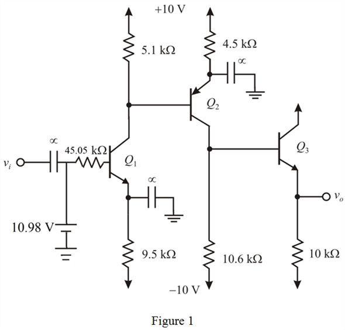

Step 1:
(a)
Refer to Figure P8.118 in the textbook for a directly connected three-stage amplifier.
Observe that the first stage of three-stage amplifier is in voltage divider bias form, is in parallel with  .
.
Obtain the equivalent voltage and resistance.
The equivalent voltage, is,

The equivalent resistance, is,
Step 2:
Draw the simplified circuit as shown in Figure 1.

Step 3:
The value of  is 0.7 V and the feedback factor,
is 0.7 V and the feedback factor,  is 100.
is 100.
Consider the input base current as  and emitter current as .
and emitter current as .
Apply Kirchhoff’s voltage law at the input loop of the first stage amplifier.
…… (1)
Relation between base current and emitter current of a transistor is,
Thus, substitute for in equation (1).
Step 4:
Calculate the collector current of the first amplifier,  .
.
Calculate the collector voltage of the first transistor.
Substitute  for
for  , for
, for  and for .
and for .
Observe from the Figure 1, that the output of the first stage acts as the input to the next stage.
Calculate the emitter current of the second transistor.
Substitute for  and
and  for .
for .
Calculate the collector current of the second transistor.
Calculate the collector voltage of the second transistor.
Step 5:
Observe that the output voltage of the second transistor  is the input to the third transistor.
is the input to the third transistor.
Observe from the Figure 1 that, .
Substitute  for and for .
for and for .
Thus, obtain the dc output voltage.
Calculate the emitter current of the third transistor, .
Step 6:
Thus, calculate the collector current, .
Thus, the dc bias current in each of the three transistors is,
Thus, the dc voltage at the output is .
Step 7:
(b)
Observe that all the emitter currents of the three transistors are approximately equal to
 , thus, calculate the emitter internal resistance of transistors,
, thus, calculate the emitter internal resistance of transistors,  .
.
Thus, consider the emitter internal resistance of the transistors represented by as  .
.
Calculate the transconductance parameter of the first amplifier,  .
.
The formula for the resistance,  is,
is,

Substitute  for
for  and for
and for  .
.
The input resistance of the circuit is,
Substitute  for and for
for and for  .
.
Thus, the input resistance  is .
is .
Step 8:
Calculate the output resistance.
Thus, the output resistance is.
Step 9:
(c)
Since, Figure 1 is a three stage amplifier, total voltage gain of the circuit can be calculated by multiplying the individual gains of the each amplifier circuit.
Since,

Thus,
Thus, the formula for the overall voltage gain is,
Thus, obtain all the required ratio’s.
The transconductance of first amplifier,  is and the resistance
is and the resistance  is, .
is, .
Thus,
Step 10:
Apply current division principle and calculate the current, .
Thus, obtain the ratio,  .
.
The relation between collector current and base current of the second transistor is,
Step 11:
The ratio of base current of transistor

to collector current of transistor

is,
The emitter current of transistor  is,
is,
The output voltage,  is,
is,
Step 12:
Substitute for , for ,  for
for  , for , forand
, for , forand  forin the equation of voltage gain.
forin the equation of voltage gain.
Thus, the voltage gain of the circuit is,
Therefore, the voltage gain is, .